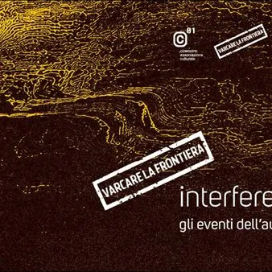

da mer 11 nov a sab 14 nov
Interferenze - Incontro con Gabriele Centis
Dopo gli appuntamenti dei mesi estivi il festival Varcare la frontiera Interferenze torna a novembre con tre nuovi momenti di approfondimento, proseguendo la sua ricerca intorno alle interferenze come possibilità di incontro e dialogo tra forme espressive. Mercoledì 11 novembre…
 Indicazioni
Indicazioni
- Costi e prenotazioni
- Costo non indicato · Prenotazione non indicata
- Programma
- Programma da verificare. Apri la fonte ufficiale per orari e possibili aggiornamenti.
- In caso di maltempo
- Nessuna indicazione specifica pubblicata.
- Note
- Acquisito automaticamente dalla fonte.
L’EVENTO
Descrizione completa
Dopo gli appuntamenti dei mesi estivi il festival Varcare la frontiera Interferenze torna a novembre con tre nuovi momenti di approfondimento, proseguendo la sua ricerca intorno alle interferenze come possibilità di incontro e dialogo tra forme espressive.
Mercoledì 11 novembre ore 18:30 presso Auditorium Casa della Musica, via dei Capitelli, 3
Le interferenze in musica, un incontro con Gabriele Centis
La musica come spazio di contaminazione tra linguaggi. In questo incontro, Gabriele Centis, figura di riferimento della scena musicale triestina, ci accompagna alla scoperta delle interferenze musicali: influenze, attraversamenti e sperimentazioni che hanno contribuito a trasformare il modo di comporre, suonare e ascoltare.
Ingresso libero con prenotazione obbligatoria: eventi@cizerouno.it
Giovedì 12 novembre ore 18:30 presso Auditorium Casa della Musica, via dei Capitelli, 3
Paolo Fagiolo dà voce alle interferenze
L'attore Paolo Fagiolo guiderà il pubblico alla scoperta del lavoro di interpretazione della parola, attraverso un’orazione funebre, un reportage e un appassionato editoriale giornalistico. Un'occasione per entrare nel processo creativo dell'attore: dall'incontro iniziale con il testo alla ricerca della voce, del ritmo e delle intenzioni, fino alla costruzione di un'interpretazione capace di restituire tutta la forza della parola. David Maria Turoldo, Libero Mazzi, Guido Miglia sono tre degli autori ai quali Fagiolo ha dato voce per questa edizione di Varcare la frontiera e che i partecipanti avranno l’occasione di riscoprire. Durante l'incontro Casa della Musica, partner di progetto, darà l'opportunità al pubblico di conoscere il dietro le quinte di uno studio di registrazione e chi vorrà potrà cimentarsi nella registrazione di un testo.
Durata: 90 minuti circa
Sabato 14 novembre ore 11:00
Itinerari basagliani, un tour nella storia dell'ex Ospedale Psichiatrico
Una passeggiata alla scoperta del Parco di San Giovanni e della storia dell'ex Ospedale Psichiatrico di Trieste, luogo simbolo della rivoluzione culturale e sociale avviata da Franco Basaglia. Guidati da Isabella Costadura esploreremo gli spazi più significativi di questa parte della città, ripercorrendo le trasformazioni che hanno restituito il parco alla comunità.
Cizerouno torna a esplorare alcune delle storie dell’ex OPP di San Giovanni, come già fatto in passato con Verde Gaudì e Scatti di follia, per comprendere come un luogo di esclusione sia diventato uno spazio aperto di incontro, cultura e partecipazione.
In collaborazione con La Collina.
Luogo di ritrovo: Ristorante/bar “Il posto delle fragole”
Ingresso 15€ con prenotazione obbligatoria: eventi@cizerouno.it
IL PROGRAMMA
Programma e orari
Appuntamenti raccolti dalle fonti elencate. Dove manca un orario, non è ancora disponibile in questa scheda.
Programma pubblicato
- Dal 2026-11-11 al 2026-11-14
INFORMAZIONI UTILI
Prima di partire
- Controllare la fonte prima di partire.
ORGANIZZAZIONE